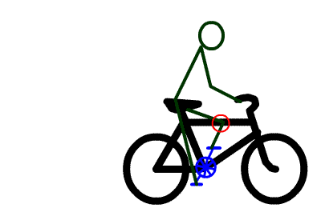
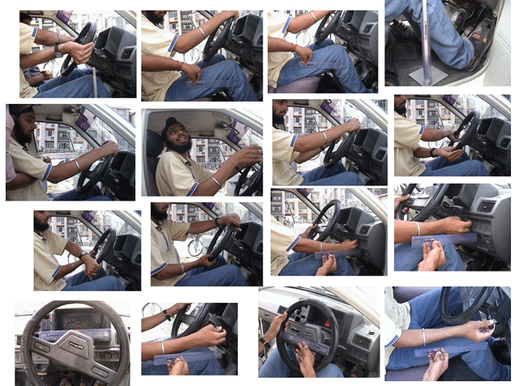

Shakshat Virtual Lab 
INDIAN INSTITUTE OF TECHNOLOGY GUWAHATI
In Workstation and product design these aspects can be very helpful to prevent injury and execution of working movements |
||
|  | ||
 |
||
|
Ignorance of body movement ranges can result into a poor workstation
|
||
|  | ||
| Different ranges of body movements of a car driver | ||